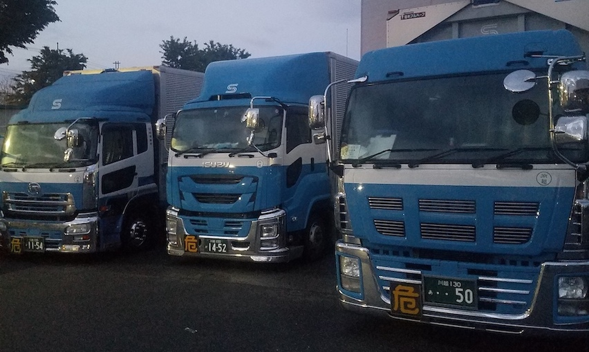

昭和運輸株式会社
基本方針
輸送の円滑と合理化。
会社の繁栄と社員の幸福をもって社会的責任を果たす。
- 会社概要
- 名称 ：昭和運輸株式会社
- 所在地 ：埼玉県川越市脇田町１７−２５畑仲ビル４階
- お問い合わせ先：TEL 049-224-8370 FAX 049-225-5717
- 代表者 ：畑仲正明
- 資本金 ：１６００万円
- 設立 ：昭和３８年２月１日
- 事業内容 ：一般区域貨物自動車運送 自動車運送取扱
- 従業員 ：３８名
- 保有車両 ：大型４台 ４t車１７台 中型車２台 ３t車９台
- 主要取引先 ：東洋インキ製造株式会社 東洋モートン 昭和化学工業株式会社 武州産業株式会社 株式会社NKトランス 有限会社くらづくり本舗
お知らせ ２０２０年５月１日現在、当社では一緒に働いてくれる仲間を募集しています。 仕事内容は４トン、中型、大型のドライバー（勤務地、川越）もしくはフォークリフトを使用しての工場内作業（勤務地、川越か東松山） になり、給与はドライバーが２６万〜３０万、工場内作業が２２万〜２６万です。荷物の積み下ろしはバラのケースもありますので体力が必要になります。高待遇とは言えないかもしれませんが休日（土日祝日、GW,お盆、年末年始）がしっかり取れる仕事になります、自分や家族、友人との時間を大切にされたい方にお勧めです。興味をもたれた方は次のメールアドレスまでお気軽に問い合わせください。 ssmitsuba@docomo.ne.jp